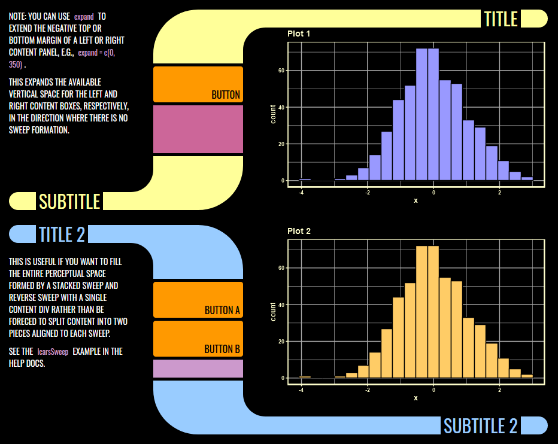

Author: Matthew Leonawicz 
License: MIT


Library Computer Access/Retrieval System (LCARS)
The lcars package provides Shiny widgets and Shiny UI theme that support an LCARS aesthetic for Shiny apps.
Using an LCARS aesthetic to visually frame the results of your analysis is fun and quirky in its own right, but it begs the next obvious step: interactivity. LCARS-themed displays can be fun to make, but using Shiny is much more exciting because you can make something with the look and feel of LCARS that also is actually operational and not just another piece of static digital fan art!

That’s right. Make your Shiny app, view it on a touch screen device like your very own Federation-issue data PADD, and transport yourself into the future of the Star Trek universe with this 1980s sci-fi television aesthetic!
Function names
The package also offers lcars_border and associated functions for adding a minimal LCARS theme to static ggplot2 graphs, but this is less interesting given the context and won’t look as authentic and the Shiny counterparts.
On the topic of the split between Shiny and non-Shiny functions, most of the package is Shiny-related. There is less focus on the ggplot border effect and related border component functions. Shiny functions use camel case like lcarsBox whereas non-Shiny functions use snake case like lcars_border. Most users will probably only use the Shiny functions.
Shiny functions
There are several Shiny functions available. These are UI containers and widgets that provide various LCARS aesthetics.
UI setup and containers:
lcarsPagelcarsBoxlcarsSweeplcarsBracketlcarsWellinputColumn
Headers and indicators:
-
lcarsHeader,lcarsh1throughlcarsh6. -
lcarsRect,lcarsPill, etc.
Input controls
lcarsButtonlcarsCheckboxlcarsTogglelcarsRadiolcarsRadioToggle
The key widgets are lcarsHeader, lcarsBox and lcarsSweep. An example of the header and box is shown above. Here is a combined LCARS sweep and reverse sweep:

The screenshots above are taken directly from demo apps included in the package. See ?lcarsApp for details. For detailed examples including Shiny app examples, see the package vignette.
Installation
Install the CRAN release of lcars with
install.packages("lcars")Install the development version from GitHub with
# install.packages("remotes")
remotes::install_github("leonawicz/lcars")Limitations
In adhering closely to sizing and layout rules for LCARS UI design, fixed sizing works best for some container widgets like lcarBox and lcarsSweep. You can use settings like width = "100%" for these containers, but you may notice limitations in maintaining a responsive UI, particularly when they contain plot outputs. Fixed width widgets are generally recommended.
Visual components such as the LCARS elbow shape underlying some widgets are intended to follow strict sizing and scaling rules. They are not intended to scale arbitrarily or fit well on very small device screens.
Packages in the trekverse

rtrek: The core Star Trek package
Datasets related to Star Trek, API wrappers to external data sources, and more.

lcars: LCARS aesthetic for Shiny
Create Shiny apps based on the Library Computer Access/Retrieval System (LCARS).

trekcolors: A color palette package
Predefined and customizable Star Trek themed color palettes and related functions.

trekfont: A fonts package
True (Trek) type fonts to style your Star Trek themed graphics text.
Citation
Matthew Leonawicz (2023). lcars: LCARS Aesthetic for Shiny. R package version 0.3.7. https://github.com/leonawicz/lcars
Contribute
Contributions are welcome. Contribute through GitHub via pull request. Please create an issue first if it is regarding any substantive feature add or change.
Please note that the lcars project is released with a Contributor Code of Conduct. By contributing to this project, you agree to abide by its terms.